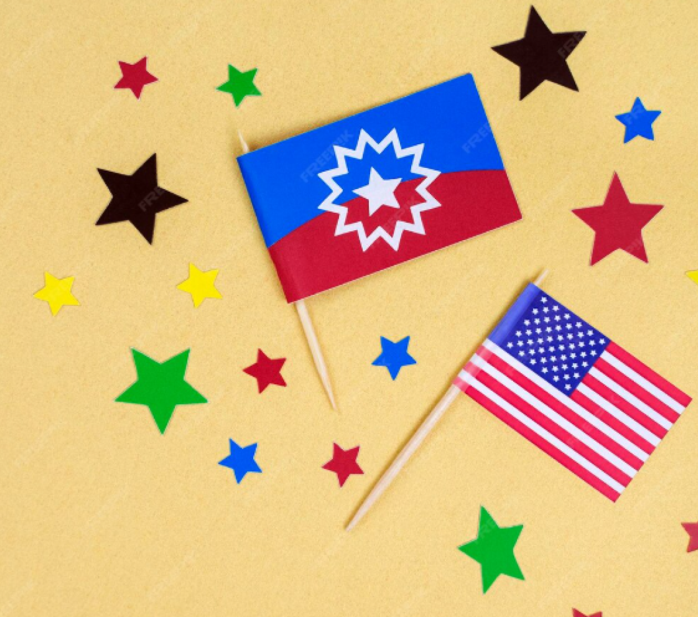

Stars appear on many national flags—symbolizing unity, freedom, independence, and hope. Explore how different countries use stars to express their identity.
Explore moreStars represent important ideas such as unity, independence, guidance, hope, and national identity. Many countries choose stars because they are simple, powerful, and meaningful symbols.
Many well-known countries use stars on their flags—each with a unique purpose and story.
50 stars represent its 50 states.
Stars represent the Southern Cross constellation.
One big star for the Communist Party and four small stars for unity.
Not all stars look the same. Countries use different shapes and patterns to express their identity and history.

Here’s a simple timeline showing when some major star-based flags were adopted
Answer 5 random questions about flags from around the world.
Question 1 / 5
Score: 0
⏳ Time Left: 30s
Stars on flags tell stories of unity, freedom, and national identity. From constellations to states and ideals, each star represents a piece of a country’s history.